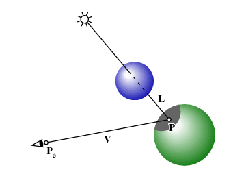

複数の物体があるとき，ある物体の影が別の物体に落ちるようにしてください．
現在の可視点 P から光源に向かうベクトル L の方向に，別の物体が一つでもあれば，P は影になります．

P から L の方向に伸ばした半直線が一つでも他の物体と交差する場合に -1，交差しない場合に 0 を返す関数 shadow() を shade() の前に置いてください．
int shadow(const float *p, const float *l)
{
/*
** 点 P から L の方向に物体があれば -1，
** 無ければ 0 を返す
*/
}
この shadow() を shade() に組み込んで， 影の部分の陰影は環境光のみとなるようにしてください． shade() の中で shadow() を使うために， shade() の引数に現在の可視点 P を追加する必要があります．
void shade(const float *l, const float *n, const float *v, const float *p,
const struct Material *k, float *i)
{
/*
** 光線ベクトル L，物体表面の法線ベクトル N，
** 視線ベクトル V，
** 環境光に対する反射係数 Ka，
** 物体表面の拡散反射係数 Kd，
** 物体表面の鏡面反射係数 Ks，
** ハイライトの広がり（輝き係数）Ke，
** 光源の強度 Il，環境光の強度 Ia から，
** 完全拡散反射面における反射光強度 I を求める
*/
}